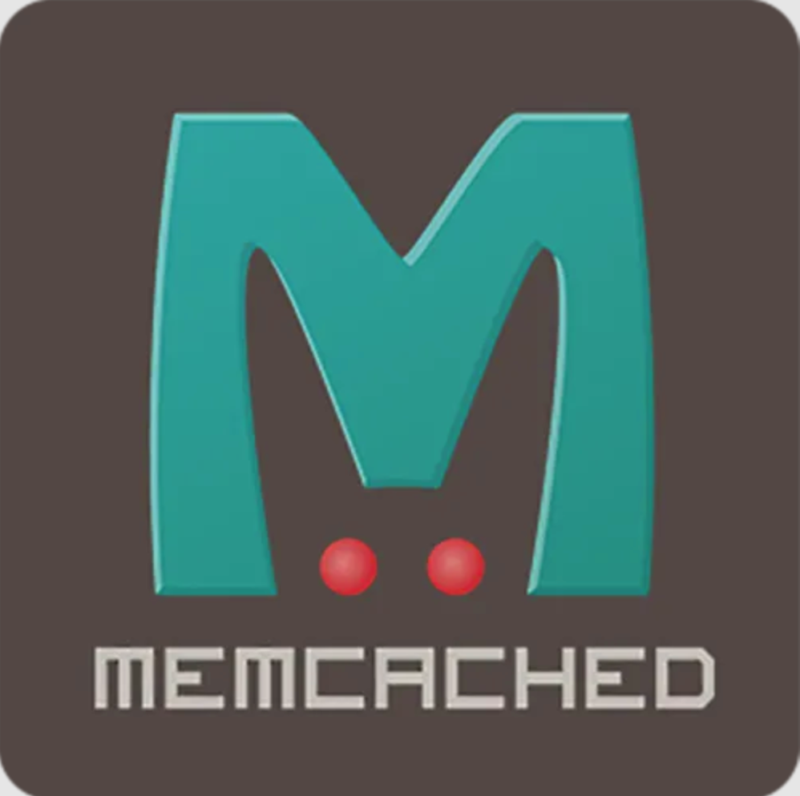

首页 > 编程笔记
Memcached数据简介
Memcached 是一个开源的、支持高性能、高并发的分布式内存缓存系统，由C语言编写，总共 2000 多行代码。
从软件名称上看，前3个字符“Mem”就是内存的意思，而接下来的5个字符“Cache”就是缓存的意思，最后一个字符 d，是 daemon 的意思，代表是服务端守护进程模式服务。
Memcached 服务分为服务端和客户端两部分，其中，服务端软件的名字形如 Memcached-1.4.24.tar.gz，客户端软件的名字形如 Memcached-2.25.tar.gz。
Memcached 软件诞生于 2003 年，最初由 LiveJournal 的 Brad Fitzpatrick 开发完成。Memcache 是整个项目的名称，而 Memcached 是服务器端的主程序名，因其协议简单，应用部署方便且支持高并发，因此广泛应用于互联网企业，直到现在仍然如此。
Memcached 官方网站地址为：http://memcached.org/
缓存一般用于保存一些经常被存取的对象或数据（例如，浏览器会把经常访问的网页缓存起来），通过缓存来存取对象或数据要比在磁盘上存取快很多，因为前者使用的是内存，后者使用的是磁盘。
Memcached 是一种纯内存缓存系统，把经常存取的对象或数据缓存在 Memcached 的内存中，程序通过 API 的方式存取这些被缓存的数据，Memcached 里面的数据就像一张巨大的 HASH 表，数据以 key-value 对的方式存在。
Memcached 通过缓存经常被存取的对象或数据，从而减轻频繁读取数据库的压力，提高网站的响应速度，构建出速度更快的可扩展的 Web 应用。
由于 Memcached 为纯内存缓存软件，一旦重启，所有的数据都会丢失，因此，新浪网基于 Memcached 开发了一个开源项目 Memcachedb。通过为 Memcached 增加 Berkeley DB 的持久化存储机制和异步主辅复制机制，使 Memcached 具备了事务恢复能力、持久化数据存储能力和分布式复制能力。
Memcachedb 非常适合需要超高性能读写速度、持久化保存的应用场景，但是最近几年其正逐渐被其他的持久化产品所替代，例如 redis。
有关 Memcached 的知识小结

从软件名称上看，前3个字符“Mem”就是内存的意思，而接下来的5个字符“Cache”就是缓存的意思，最后一个字符 d，是 daemon 的意思，代表是服务端守护进程模式服务。
Memcached 服务分为服务端和客户端两部分，其中，服务端软件的名字形如 Memcached-1.4.24.tar.gz，客户端软件的名字形如 Memcached-2.25.tar.gz。
Memcached 软件诞生于 2003 年，最初由 LiveJournal 的 Brad Fitzpatrick 开发完成。Memcache 是整个项目的名称，而 Memcached 是服务器端的主程序名，因其协议简单，应用部署方便且支持高并发，因此广泛应用于互联网企业，直到现在仍然如此。
Memcached 官方网站地址为：http://memcached.org/
缓存一般用于保存一些经常被存取的对象或数据（例如，浏览器会把经常访问的网页缓存起来），通过缓存来存取对象或数据要比在磁盘上存取快很多，因为前者使用的是内存，后者使用的是磁盘。
Memcached 是一种纯内存缓存系统，把经常存取的对象或数据缓存在 Memcached 的内存中，程序通过 API 的方式存取这些被缓存的数据，Memcached 里面的数据就像一张巨大的 HASH 表，数据以 key-value 对的方式存在。
Memcached 通过缓存经常被存取的对象或数据，从而减轻频繁读取数据库的压力，提高网站的响应速度，构建出速度更快的可扩展的 Web 应用。
由于 Memcached 为纯内存缓存软件，一旦重启，所有的数据都会丢失，因此，新浪网基于 Memcached 开发了一个开源项目 Memcachedb。通过为 Memcached 增加 Berkeley DB 的持久化存储机制和异步主辅复制机制，使 Memcached 具备了事务恢复能力、持久化数据存储能力和分布式复制能力。
Memcachedb 非常适合需要超高性能读写速度、持久化保存的应用场景，但是最近几年其正逐渐被其他的持久化产品所替代，例如 redis。
有关 Memcached 的知识小结
- Memcached 为 key-value型数据库。
- Memcached 为纯内存数据库。
- Memcached 相关持久化产品 Memcachedb、Tokyo Cabinet\Tokyo Tyrant(ttserver)。
关注公众号「站长严长生」，在手机上阅读所有教程，随时随地都能学习。内含一款搜索神器，免费下载全网书籍和视频。

微信扫码关注公众号